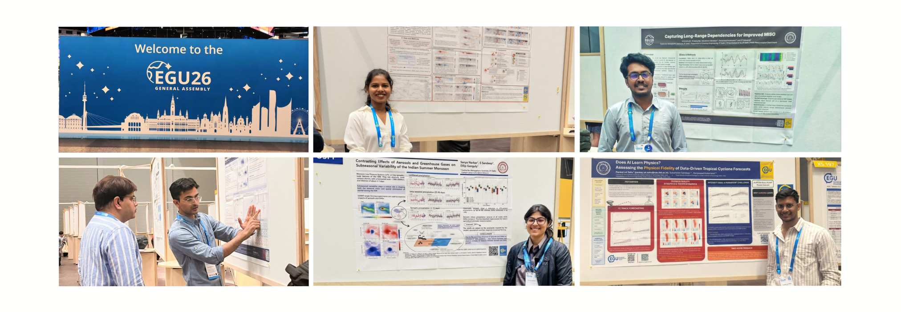

Lab Highlights
Stay updated with the latest milestones from our research group.

Climate Dynamics Lab at EGU 2026
Research scholars from the Climate Dynamics Lab represented the Centre for Atmospheric Sciences (CAS) at the prestigious EGU General Assembly 2026, held at the Austria Center Vienna in Vienna, Austria. The delegation engaged with global geoscience experts, showcasing the laboratory's latest advancements in tropical monsoon physics and data-driven atmospheric diagnostics.
The participating scholars presented their research abstracts across multiple technical sessions, fostering meaningful scientific dialogues and technical exchanges with international collaborators:
-
Alice Jeeva P. J. — QBW Dynamics and Multiscale Interactions in Contrasting Indian Summer Monsoon Years ↗
Investigating scale interaction processes and the structural dynamics of the Quasi-Biweekly Oscillation (QBW) to advance multi-scale tracking capabilities during contrasting monsoon periods.
-
Sanya Narbar — Contrasting Effects of Aerosols and Greenhouse Gases on Subseasonal Variability of the Indian Summer Monsoon ↗
Evaluating multi-forcing coupled variants to decouple and contrast the internal mechanisms through which atmospheric particulate components alter seasonal precipitation trends under varying global temperatures.
-
Charudatt J. Puri — Barotropic or Baroclinic: The Hybrid Genesis of Indian Summer Monsoon Low-Pressure Systems ↗
Dissecting the fundamental structural origin mechanics of synoptic monsoon depressions to isolate hybrid instability triggers and energy transformations across localized wind fields.
-
Pankaj Lal Sahu — Does AI Learn Physics? Assessing the Physical Fidelity of Data-Driven Tropical Cyclone Forecasts ↗
Probing data-driven weather prediction architectures with strict testing controls to evaluate whether deep neural layers faithfully preserve underlying fluid dynamic conservation rules during severe tropical cyclone simulations.
-
Anirudh K. M. — Capturing Long-Range Dependencies for Improved MISO Prediction via Deep Learning ↗
Engineering specialized deep neural learning pipelines capable of capturing long-range atmospheric dependencies to upgrade predictive baseline skills across complex sub-seasonal forecast scales.